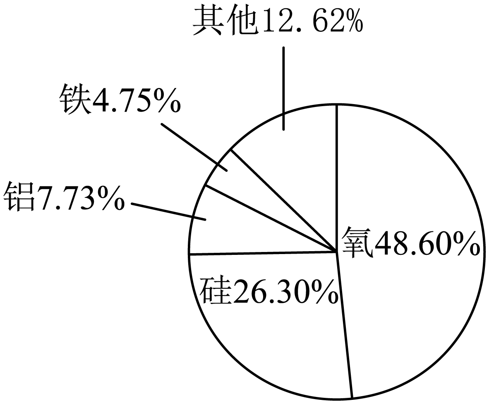

2023年北京市中考化学真题 · 选择题 第1、2、3、4、5题
1. 空气成分中，体积分数最大的是（ ）
A. 氮气B. 二氧化碳C. 氧气D. 稀有气体
2. 各种元素在地壳里的含量(质量分数)如下图，其中含量最多的元素是

A. 铁B. 铝C. 硅D. 氧
我们要形成绿色生活方式，像保护眼睛一样保护自然和生态环境。回答3~5题。
3. 下列行为不符合“低碳”理念的是
A. 自备购物布袋B. 按需取餐不浪费
C. 减少使用一次性餐具D. 教室人空未关灯
4. 2023年3月1日《北京市节水条例》正式实施。下列做法不利于节水的是
A. 用淘米水浇花B. 水管跑冒滴漏及时维修
C. 选用节水龙头D. 洗手打香皂时不关水龙头
5. 垃圾分类，利国利民。塑料瓶属于
A. 可回收物B. 其他垃圾C. 厨余垃圾D. 有害垃圾